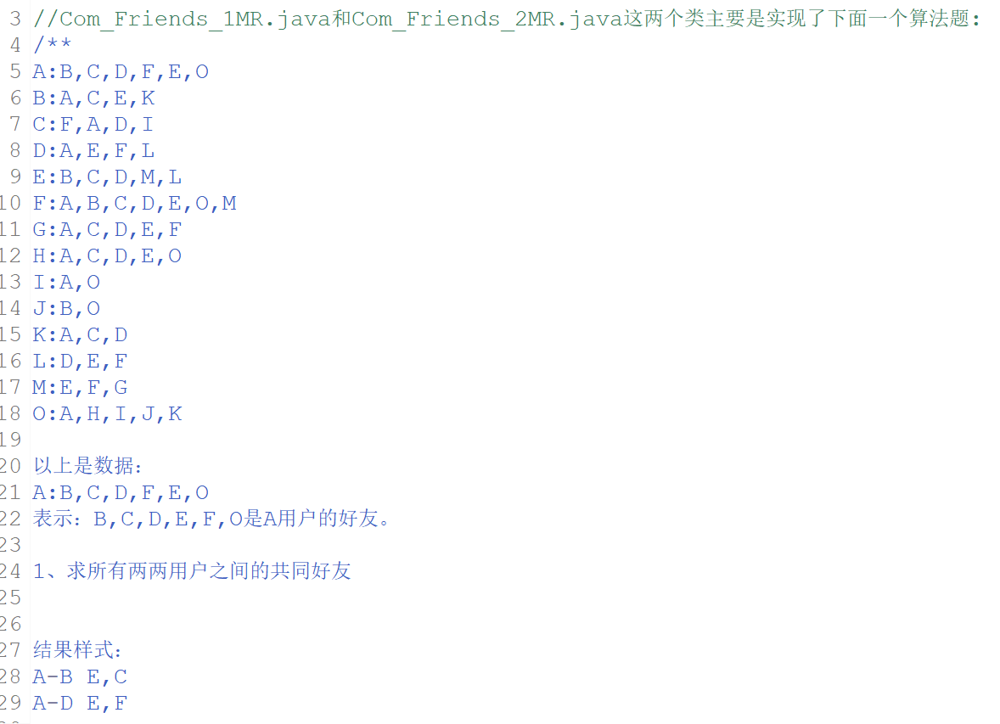
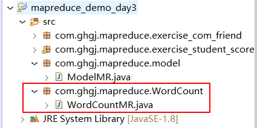
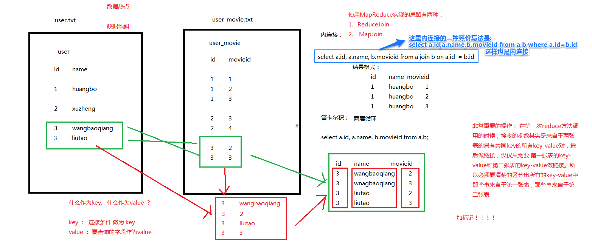
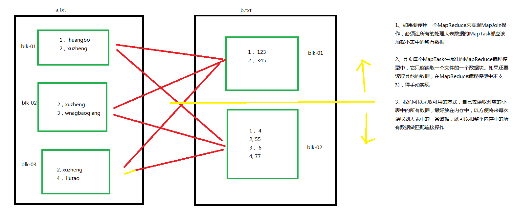
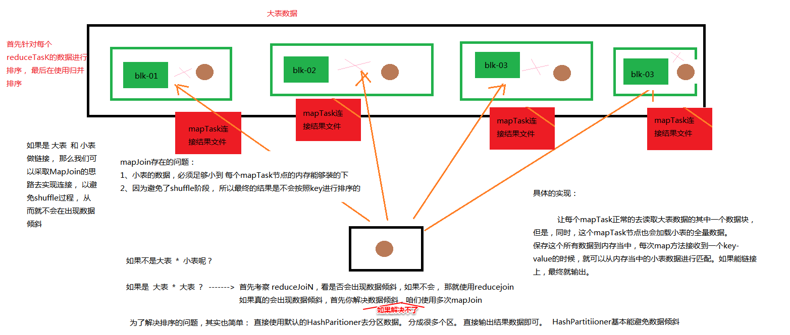

1 、多job串联运行
详情参考求eclipse里的"求共同好友"的案例
题目:



但最终实现串联主要是看其中的下图这个类


2、自定义分组规则求TopN
详情参考求eclipse里的"求每门课程的平均成绩的第一名"的案例

自定义的分组规则主要在CSGroupComparator类里,排序规则主要在自定义key类型Student类里
题目:


主要矛盾如下:(这次代码的主要特点就是解决了以下问题)


在自定义分组规则时,在对数据进行分组之前,要想到要先对数据进行反序列化。
也就是写分组规则的代码之前要先调用父类WritableComparator()的构造方法来实现反序列化(应该是默认的分组规则类已经反序列化过了,所以自定义分组规则类才需要调用构造方法进行反序列化)
具体分组前反序列化代码写法参见eclipse下图所示项目

MapReduce共有两次序列化,一次是快速排序阶段结束时(有combiner的话是在combiner结束。不太确定有combine的话会不会也是在快速排序结束后序列化到磁盘，再在combine之前反序列化回内存),将数据项写到磁盘,然后进行网络传输,另一次是reducer阶段结束时,将数据写成结果文件(这个结论其实不太重要)
也可能有两次反序列化，一次是在combine开始前（因为combine毕竟是继承的reduce类），一次是在reduce阶段开始前，入读测阶段开始前当然要把在磁盘中的数据反序列化回内存。
3、MapReduce 全局计数器
自定义全局计数器的实例详情参考eclipse里的的案例:

代码主要有两个目的:


实际实现自定义全局计数器的代码


最终程序的结果并不是体现在输出的结果文件上,因为并不输出任何文件,而是体现在控制台打印的信息上:

4、join的实现思路
(1)join即两份或多份数据连接,类似于数据库表的内连接

(2)join的实现思路（这里是reduceJoin）:

(3)ReduceJoin和MapJoin的优缺点:
使用ReduceJoin时,如果某个ReduceTask的数据非常多(某个ReduceTask中的数据量占比数据总量非常大,其他的ReduceTask处理的数据非常少,称为数据热点现象),可能会造成内存溢出,当前的任务会出现数据倾斜,也就说任务的规模极度不均衡。并且,如果唯有一个ReduceTask要处理的数据很大的话, 其他ReduceTask运行结束后要单独等待这个ReduceTask完成, 整个MapReduce程序才算运行结束,所以可能运行时间会大大超出预期
如果使用MapJoin,那么不会有上述问题（因为MapJoin没有reduce阶段）,但是每个maptask要读取两个文件的数据进行连接, 会使得编码的复杂度增加。
所以,如果每个id所对应的数据分布比较均衡,那么肯定是用ReduceJoin方便一些(虽然方便,但还是MapJoin要效率高一些,毕竟没有reduce阶段),如果是极度不均衡,那么最好使用MapJoin。
(4)ReduceJoin的具体实现
详情参考求eclipse里的"求user表和movie表的内连接"的案例


(5)MapJoin的具体实现(DistributedCache的应用)
详情参考求eclipse里的"求user表和rating表的内连接"的案例

1)MapJoin的编程思路：
a、编写一个MapReduce程序， 只读取 大表数据(大表就是指数据量非常大的文件,或者说数据量远大于小表的文件)
b、在该mapReduce程序中的mapper阶段，要把小表的所有数据先加载到内存
c、在setup方法中初始化一个hashmap
通过流的方式去进行读取小表数据，然后解析出来对应的key-value存储进入该hashmap中
d、在mapper组件中的map方法中， map方法每调用一次，就是每从大表中读取到的一条记录, 解析出来之后，去hashmap中进行匹配连接， 如果匹配，则输出。
e、如果可以不用管其他的操作， 仅仅只是做链接， 那么就可以直接只使用mapper阶段就ok，
不需要reduce阶段
2)实现的思想:(主要是第二个图)


3)题目:


(6)心得

———————————————————————手写与上传资料分割线—————————————————————
mapreduce编程模型中的三大核心组件：
要点：
1、partitioner
1、mapreduce编程模型中的默认实现是HashPartitioner
2、HashPartitioner的原理是按照key的hash值取模除以redcueTask个数的余数
这个余数就决定了传入该getPartition方法参数key-value到底要被分配到哪个编号的reduceTask
3、在mapreduce编程模型中的对应关系：
分区个数 == reduceTask个数 == 结果文件个数
4、如果需要自带的默认实现HashPartitioner不能满足我们的要求，需要做自定义实现：
按照 HashPartitioner的实现方式，编写一个自定义的Parititoner类去继承 Parititoner抽象类
实现其中的getPartition方法
5、设置reduceTask的要点:
1、在driver中的main方法中，一定要给对应的job设置要是使用自定义的Parititoner
job.setPartitionerClass();
2、关于设置reduceTask的个数
1、设置为1，表示设置的Partiioner不起作用
2、设置成对应需求的reDduceTask，正常
3、大于1，并且小于redcueTask的个数，程序会抛错
4、设置大于reduceTask的个数，会启动很多的无效JVM进程，reduceTask
2、sort
1、如果mapreduce编程中有reducer阶段，那么排序就一定会进行
而且排序只会对key排序
所以， 作为key的那个类必须要指定排序规则
2、如果作为key的类是自定义的类， 那么必须指定排序规则，而且还要进行序列化实现，
所以要实现WritableComparable接口
3、如果一个mapreduce程序中没有recducer阶段， 那么就没有shuffle， 就没有排序阶段
4、在代码中没有设置reduceTask的个数 不代表没有redcueTask任务，
默认运行一个默认实现的RedcuerTask
5、当一个作为key的自定义类要实现WritableComparable借口，要实现三个方法：
1、序列化方法： write(DataOutput out)
2、反序列化方法： readFields(DataInput in)
3、排序规则：compareTo(Flow o)
6、当用户自定义类 要作为value的时候， 仅仅只需要实现Writable接口
当用户自定义类 要作为 key 的时候， 仅仅只需要实现WritableComprable接口
3、combiner
1、combiner的实现方法： 和redcuer的编写一样： 继承REdcuer抽象类， 重写redcue方法
2、combiner的作用：仅仅只是运行在每一个mapTask节点，为了在mapTask运行的节点中做一个局部聚合
以减少shuffle阶段参数shuffle的数据量。 其实就是为了介绍网络数据传输
3、combiner的使用： 如果在不影响业务逻辑的情况下，咱们可以直接使用Redcuer组件充当Combiner
那些场景适用：
max, count, min, sum 这些操作基本都使用。并不是决定
那些场景不适用：
avg 也不是绝对的。 需要改写原来的Reducer逻辑以使用Conbiner
经验推荐：
如果当combiner的输入 和 输出的key-value的类型一致的话， 才基本适用说让 Redcuer充当 Combiner
servlet:
init（）
service（）
destroy（）
mapper
setup（）
map（）
cleanup（）
真正的业务逻辑一定是编写在Mapper和Reducer中
普通的编程场景：
min
max
sum
count
count distinct
高级的编程场景：
topn
join
hadoop fs -mkdir -p /cf/input
hadoop jar cf.jar com.CFMR /input /output
结合两个技能：
1、采用MapReduce编程模型中的源码实现方式中的一种
extends Configured implements Tool
编写一个main作为 程序的入口
实现tool接口中的run方法
使用这种技能去编写MapReduce的时候，就应该把原来的 main 方法中的代码编写在run方法中
然后再main方法中通过一个工具类调用当前MR程序的一个实例对象的run
方法去执行
2、采用全局计数器来实现 单词计数
join
SQL语句：
select a.*, b.* from a join b on a.id = b.id; 内连接
select a.*, b.* from a,b; 笛卡尔积
笛卡尔积 和 内连接的 区别
笛卡尔积 就是 没有连接条件的 连接
如果说 以上两种编程场景需要我们去使用MapReduce来实现， 思路。！！！！！
分析问题：
1、既然是两张表连接， MapReduce程序读取到的数据 不是 统一的一种格式，而是两种格式
2、输入数据既然是两份不同格式的数据，那么一定会存在一个问题
要判断出当前的mapTask所处理的数据到底是来自于哪个表
3、怎么做链接？
把两份能链接上的数据按照id分组，然后把所有要查询的字段都当做value来进行两层循环的拼接
MapJoin的编程思路：
1、编写一个MapReduce程序， 只读取 大表数据
2、在该mapReduce程序中的mapper阶段，要把小表的所有数据加载到内存
3、在setup方法中初始化一个hashmap
通过流的方式去进行读取小表数据，然后解析出来对应的key-value存储进入该hashmap中
4、在mapper组件中的map方法中， map方法每调用一次，就是从大表中读取到的一条记录
解析出来之后，去hashmap中进行匹配连接， 如果匹配，则输出。
5、如果可以不用管其他的操作， 仅仅只是做链接， 那么就可以直接只使用mapper阶段就oK
不需要reducre阶段